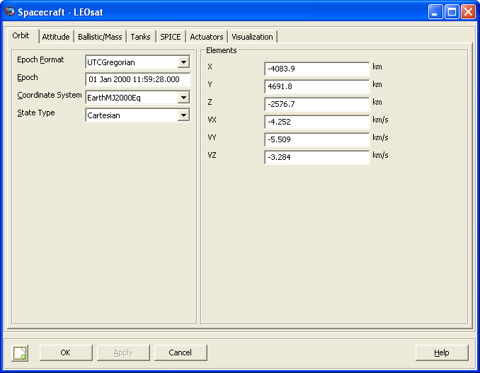
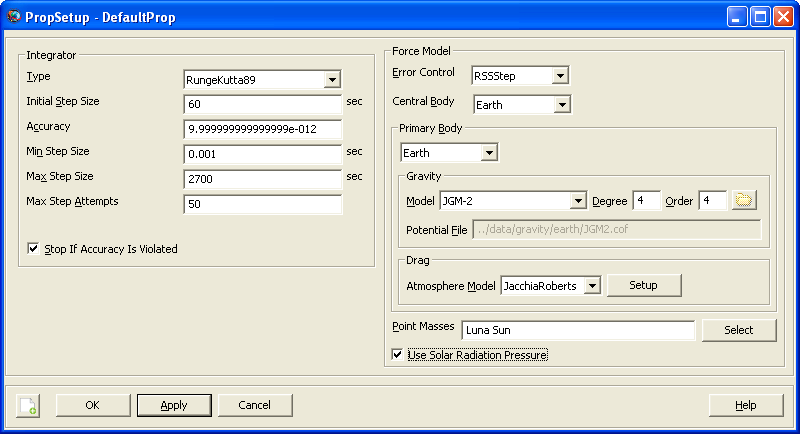
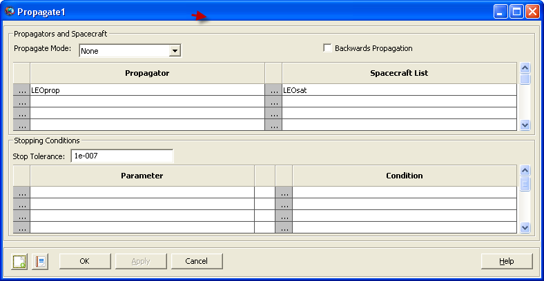
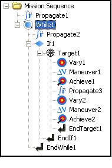

Final result: HohmannTransferDesign.script
In this tutorial, you will learn how to use control flow and targeting in GMAT to maintain a Low-Earth orbit in the presense of drag. The area-to-mass ratio of the spacecraft is large to cause a rapid lowering of the orbit semimajor axis for the sake of simulation time. However, the process used in this script is useful for generating delta-V estimates for LEO stationkeeping of real-world missions. The basic steps of this tutorial are:
Create and configure a spacecraft, impulsive maneuver, propagator, XYPlot, and differential corrector.
Create a conditional loop using a while statement that propagates for 10 days.
Run the mission and observe the behavior if there is no orbit control strategy.
Create a target sequence nested in an if statement that executes if altitude is below 342 km.
Run the mission and observe the behavior of orbit altitude with the control strategy implemented in step 4.
In this section, you will configure a model of a LEO spacecraft, a propopagator , a maneuver, and an XY plot to visualize the SMA during the control sequence developed in the next section.
Starting from the Resource Tree, right-click on DefaultSC, select rename, and change the name to LEOsat.
Right-click on LEOSat, locate the EpochFormat combo box, and change the Epoch Format to UTCGregorian.
Set the Epoch to 05 Jan 01 2010 00:00:00.000
Set the state using the following values: X = -4083.9 , Y = 4691.8 , Z = -2576.7 , VX = -4.252 , VY = -5.509 , VZ = -3.284
Verify the configuration against the screen capture below, make any changes necessary, and click Ok on the LEOsat dialog box.
|  |
Figure: LEOsat Spacecraft Object
Right-click on DefaultProp, select Rename, and change the name to LEOprop.
Right-click on DefaultProp, and select Open.
Locate the Drag Model group box and change the Atmosphere model to JacchiaRoberts.
Click the select button to the right of the Point Masses list. Add the Sun, and Luna as Point Masses to the right-hand side list and click Ok.
Check the Use Solar Radiation Pressure box
Verify the configuration against the screen capture below, make any changes necessary, and click Ok on the LEOprop dialog box.
|  |
Figure: LEOprop Propagator Object
We'll use the default configurations for a maneuver and a differential corrector so simply follow the steps below to create default configurations of those objects.
Locate the Solvers folder under the Resource Tree and expand it if it is minimized.
Right-click on the Boundary Value Solvers folder and select DifferentialCorrector.
Rename the new Differential Corrector DC using steps described above.
Right-click on DefaultIB in the Burns folder, select Rename, and change the name to DeltaV.
You will implement this mission in two parts. The first part is to add a While loop to the mission sequence, put a propagate sequence in the While loop, and configure the loop to propagate for about 10 days. At this point in the tutorial, there is no orbit control strategy implemented and upon running the mission you will see the SMA drop below the allowed value of 340 km. In the second part, you will implement a control sequence to ensure SMA remains above approximately 340 km. Below is an illustration of the Mission Tree after you have completed Part 1.
Figure: Mission Tree, Part I
Starting from the Mission Tree, right-click on Propagate1, select Insert After, locate Control Logic in the menu, and select While.
Right-click on Propagate1 and select Delete.
Right-click on While1, select Insert After, and select Propagate.
After While1, insert another Propagate
Now you will configure the While1 to continue if the ElapsedDays of LEOsat is less than 10 days and configure the Propagate2 command to take a single propagation step.
Open the dialog box for the Propagate1 command.
Double-left click in the Stopping Conditions
Parameterfield to select the textLEOSat.ElapsedSecs. Press the delete key to delete the text.Double-left click in the Stopping Conditions
Conditionfield to select the text12000. Press the delete key to delete the text.Click OK to close the Propagate1 dialog box.
 Figure: Propagate1 Command
Open the dialog box for the While1 command.
Notice that the left-hand side of the conditional statement is already set to
LEOSat.ElapsedDaysand the conditional operator is already set to "less-than". We will leave those fields at their default.Change the right-hand side text box to the value 10.0.
Click OK to close the While1 dialog box.

Figure: While1 Command
Now let's run the mission and observe the resulting altitude evolution by clicking Run in the Toolbar. You should see a plot that looks similar to the illustration below. Notice that the alttitude drops below the allowed value of 342 km. In the next part of this tutorial, you will implement a control strategy to prohibit altitude from breaking the constraint.
 |
Figure: Output After Part 1
Below you will implement a control strategy that performs a Hohmann transfer if altitude drops below 342 km. If you have not taken the Hohmann Transfer tutorial you may wish to do so now. Below we assume you have basic knowledge of how to configure a Hohmann transfer in GMAT and do not provide all detailed steps. The figure below illustrates the Mission Tree afer you have completed configuring the command sequence below.
|  |
Figure: Mission Tree, Part II
Add an If statement after the Propagate2 Command.
Add a Vary statement inside of the Target1 Command.
Add a Maneuver after the Vary1 Command.
Add an Achieve command after the Vary1 Command.
Add a Propagate command after the Achieve1 Command.
Add a Vary Command after the Propagate3 Command.
Add a Maneuver after the Vary2 Command.
Add an Achieve after the Maneuver2 Command.
Now you will configure the commands you created above to perform the Hohman transfer control sequence.
Open the dialog box for the If1 command
Set the left-hand side value to LEOsat.Altitude
Set the right-hand side value to 342 and click OK to close the If1 dialog box.

Figure: If1 Command
Open the dialog box for the Vary1 Command.
Change the IntialValue field to 0.002 and click OK to close.
Figure: Vary1 Command
Open the dialog box for the Achieve1 Command.
Change the left hand side value to LEOsat.Earth.SMA.
Change the right hand side to 6734 and then click OK to close.

Figure: Achieve1 Command
The views that you created are good for seeing how well the mission sequence is keeping LEOsat in its orbit. The SMA view shows some thickness to it while the RAAN view shows barely any at all. You may now try and change the mission parameters as outlined in the mission tree section to see how the spacecraft's drift is affected.
 |
Figure: Output